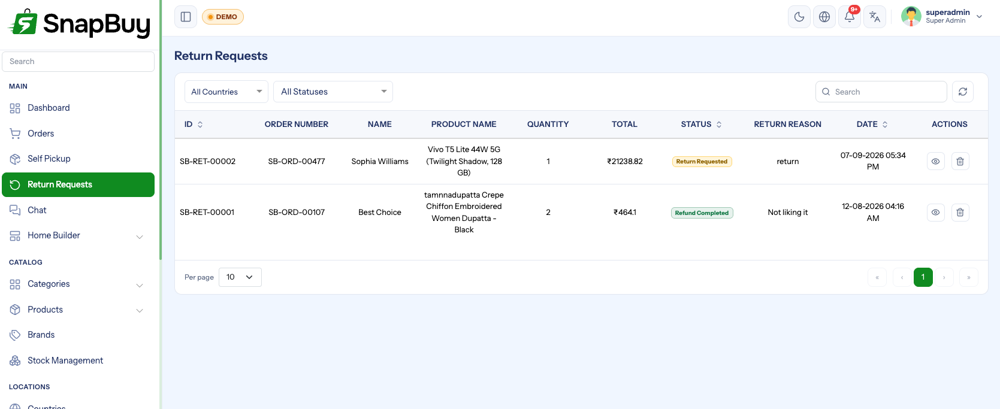

Return Requests
Menu path: Return Requests
When a customer wants to send something back, a return request is raised and moves through its own status flow — separate from the order's.

The return flow
Return Requested → Accepted → Delivery Boy Assigned → Out For Pickup
→ Received From Customer → Return to Store → Refund CompletedOr Rejected at the review stage.
| Status | What it means | Who acts |
|---|---|---|
| Return Requested | Customer raised it | Waiting on you |
| Accepted | You approved the return | Admin |
| Rejected | You declined it | Admin |
| Delivery Boy Assigned | A rider will collect | Admin |
| Out For Pickup | Rider is on the way | Rider |
| Received From Customer | Rider has the item | Rider |
| Return to Store | Item is back at the store | Rider / store |
| Refund Completed | Money returned | Admin |
The return is a collection, run in reverse
Notice that a return uses the delivery network in the opposite direction — a rider is assigned, goes out for pickup, and brings the item back to the store. It is not a courier drop-off.
Reviewing a request
Accept or reject each request. Rejecting should carry a reason the customer can understand — it is the single biggest driver of follow-up support contact.
Judge against your published return policy
Your return policy is per country and is what the customer agreed to. Rejecting a request that your own published policy allows creates a dispute you will lose, and possibly a chargeback.
Set a realistic return window in the policy
An unlimited window is unmanageable; three days is often too short for a customer who was travelling. Whatever you choose, publish it clearly and apply it consistently.
Assigning a rider for pickup
Once accepted, assign a delivery boy to collect. The rider then moves the request through Out For Pickup → Received From Customer → Return to Store from their portal.
Riders see a restricted set of return statuses too
Just as with orders, riders can only advance the pickup-related statuses. Acceptance, rejection and refunds are admin-only.
Refunds
Refund Completed is the final step. Where the money goes depends on how the refund is issued:
| Route | Notes |
|---|---|
| Back to the original payment method | Through the gateway used for the order |
| To the customer's wallet | Instant, and keeps the value in your store |
Do not mark Refund Completed before the money moves
The status is a record, not an action. Marking it complete without issuing the refund leaves the customer out of pocket with your own system saying they were paid — an easy way to turn a return into a chargeback.
Gateway refunds need the original credentials in place
Refunding through a gateway requires the credentials that took the payment to still be configured. If you have rotated or removed them, that refund will fail. See Payment Gateways — Refunds.
Stock
When a returned item comes back to the store, decide whether it re-enters sellable stock.
Returned stock is not automatically resellable
Perishables, opened packaging and damaged goods should not go back on sale. Check the item before adjusting stock at the store — an automatic return to shelf will eventually send a customer something they should never have received.
Customer notifications
| Event | When |
|---|---|
order_item_returned_customer | Return processed |
wallet_refund_returned_customer | Refund credited to the wallet |
wallet_refund_cancelled_customer | Refund for a cancelled item |
Enable them under Notification Settings.
Notify at acceptance, not just completion
The gap between "requested" and "refunded" is where support tickets are generated. A message confirming the return was accepted and a rider is coming removes most of them.
Which orders can be returned
Returns apply to the eCommerce channel, which has a Returned order status. Quick-commerce orders do not carry that status — see Orders Workflow.
Quick-commerce problems are handled as cancellations or refunds
A quick order that went wrong is normally resolved by cancelling the item and refunding, rather than by a scheduled collection.
Troubleshooting
| Symptom | Cause | Fix |
|---|---|---|
| Customer cannot raise a return | Order is quick-channel, or outside the policy window | Handle as a cancellation/refund |
| Rider cannot see the pickup | Not assigned, or not notified | Assign; check cron and Firebase |
| Refund fails at the gateway | Credentials changed since the order | Restore the original gateway configuration |
| Customer says no refund arrived | Marked complete without issuing it | Verify in the gateway dashboard |
| Stock wrong after returns | Returned items added back automatically | Check condition before restocking |
| Customer not told anything | Return notifications disabled | Enable them |